Triton CBT /
Memulai
Selamat Datang di Portal Panduan
Pengguna
Buku panduan ini disusun untuk membantu **Siswa, Guru, dan Admin** dalam menavigasi dan
memaksimalkan seluruh fitur platform ujian online Computer Based Test (CBT) Triton Denpasar.
Misi Platform Triton CBT
Triton CBT dirancang khusus dengan pendekatan multi-level database sekolah demi keamanan
data yang maksimal dan pengawasan ujian ketat anti-kecurangan. Ujian yang adil mengukur
hasil belajar yang sesungguhnya.
Peta Peran & Tanggung Jawab
Pengguna
Siswa
(Student)
Melihat ujian aktif, mengerjakan soal di bilik
aman CBT (Exam Cockpit), menggunakan editor LaTeX untuk rumus matematika, dan
meninjau ulasan nilai ujian.
Guru
(Teacher)
Membuat wadah tryout, menginput soal manual
(gambar/LaTeX), mengimpor massal soal dari dokumen Microsoft Word (.docx),
mengajukan tryout, dan merekap skor siswa.
Admin
(Administrator)
Mengelola akun Guru/Siswa, mengelola master
data tingkat/pelajaran, meninjau & mempublikasikan tryout, serta memantau audit
log audit.
Triton CBT / Akun
Login & Pengaturan Profil
Panduan langkah untuk mengamankan akses masuk pertama kali ke sistem dan menyunting data
profil pribadi.
Langkah-langkah Login
1
Buka Halaman Login
Buka alamat website tryout
Triton. Pastikan layar menampilkan halaman selamat datang bermotif gelap modern.
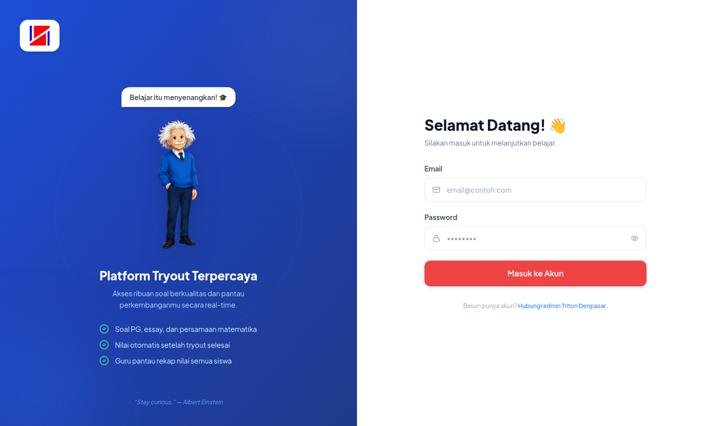
fitur-login.png
Ganti file ini dengan screenshot
halaman Login
2
Masukkan Email & Password
Input alamat email terdaftar dan
kata sandi Anda. Akun bawaan default:
| Peran |
Email |
Password |
| Admin |
admin@triton.id |
admin123 |
| Admin Soal |
adminsoal1@triton.id |
adminsoal123 |
| Guru |
guru1@triton.id |
guru123 |
| Siswa |
siswa1@triton.id |
siswa123 |
3
Masuk ke Dasbor
Klik tombol login. Apabila login
berhasil, cookie sesi akan disimpan otomatis di cache sistem Redis dan Anda
dialihkan ke halaman dasbor sesuai peran Anda.
Pengaturan Profil & Avatar
Semua pengguna dapat melengkapi data profil seperti nomor telepon, bio deskripsi diri, serta
memperbarui foto profil (avatar) pada halaman **Profil**.
Batasan File Foto Profil:
Format foto yang didukung adalah JPEG, PNG, GIF, atau WEBP. Batas
maksimal ukuran gambar adalah **2MB**. Unggahan base64 yang lebih dari 2MB akan
otomatis ditolak dengan pesan: `Ukuran gambar terlalu besar (maksimal 2MB).`
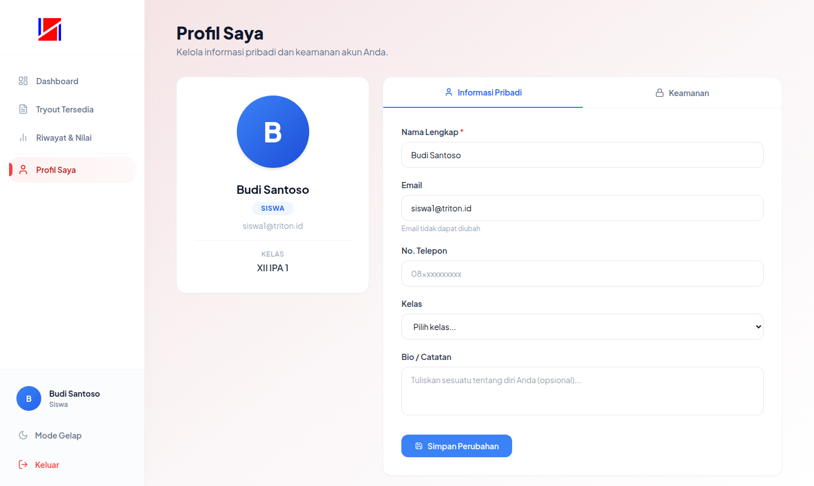
fitur-profile.png
Ganti file ini dengan screenshot halaman
profil & avatar
Siswa / Beranda
Dashboard & Penyaringan Tryout
Panduan bagi Siswa untuk memahami letak tryout yang tersedia dan status kemajuan ujian.
Mencari Tryout Aktif
Saat pertama kali mendarat di `/siswa/dashboard`, siswa akan disajikan kartu-kartu tryout
ujian.
- Informasi Kartu: Menampilkan Judul Tryout, Mata Pelajaran, Jumlah
Pertanyaan, Durasi Ujian, dan badge Guru pembuat soal.
- Penyaringan Otomatis (Jenjang & Kelas): Siswa hanya dapat melihat
tryout yang sesuai dengan jenjang pendidikannya (SD, SMP, atau SMA) dan kelas yang
ditetapkan (misalnya: kelas 12 IPA).
- Tombol Sesi:
- Mulai Tryout: Ujian belum
pernah dikerjakan. Mengeklik ini akan membuka sesi ujian baru di server.
- Lanjutkan: Ujian sedang
dikerjakan dan browser Anda sempat tertutup. Sesi akan dipulihkan tanpa
mengurangi durasi yang sudah berjalan.
- Lihat Hasil: Sesi ujian telah
selesai. Anda dapat meninjau statistik skor nilai Anda.
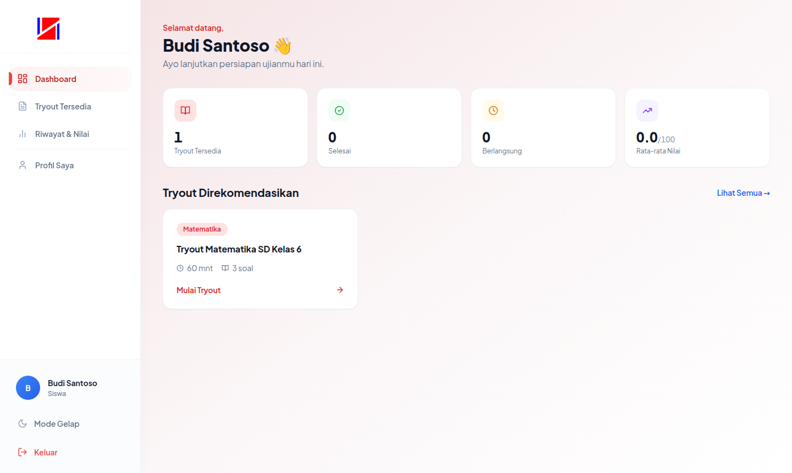
fitur-siswa-dashboard.png
Ganti file ini dengan screenshot halaman
Dashboard Siswa
Siswa / Bilik Ujian
CBT Exam Cockpit Workspace
Mengenal antarmuka steril pengerjaan ujian, kotak timer, navigasi soal, dan pengiriman
jawaban.
Timer & Sinkronisasi
Waktu
Di bagian header atas, timer berjalan dalam hitungan mundur. Waktu ini disinkronisasikan
langsung dengan server Triton. Jika sisa waktu ujian kurang dari 10 menit, timer akan
berubah menjadi berwarna merah.
Penting: Apabila waktu habis (timer 00:00), sistem akan memaksa pengiriman jawaban
secara otomatis dan melock sesi agar adil.
Kotak Navigasi Soal
Bilah navigasi samping menampilkan kotak nomor soal. Warna kotak menunjukkan status:
-
**Abu-abu**: Belum dijawab.
- **Biru**: Sudah
dijawab dan tersimpan di server.
- **Bendera Orange**:
Ditandai ragu-ragu.

fitur-siswa-exam.png
Ganti file ini dengan screenshot halaman CBT Exam
Siswa
Cara Pengumpulan Jawaban
Gunakan tombol **Berikutnya** di bilah bawah untuk berpindah soal. Pada nomor terakhir,
tombol Berikutnya berubah menjadi **Selesai & Kumpulkan**. Mengeklik tombol ini akan
membuka dialog modal peninjauan.
Isi Kotak Dialog Konfirmasi Akhir:
Sistem akan membeberkan ringkasan jumlah soal yang berhasil dijawab, jumlah soal
terlewat, dan soal yang masih ditandai ragu-ragu. Anda wajib melepas status ragu-ragu
agar jawaban tersebut dinilai. Setelah mengklik "Ya, Kumpulkan", sesi dikunci permanen.
Siswa / Proteksi
Sistem Pengawasan Keamanan
(Anti-Cheating)
Panduan kepatuhan ujian aman guna menghindari peringatan pelanggaran proktor dan
diskualifikasi otomatis.
Aturan Keras Proctoring Engine
Ujian CBT Triton Denpasar dipantau ketat secara sistem pada browser Anda. Harap patuhi
aturan di bawah untuk mencegah lembar jawaban Anda terkunci:
1. Wajib Layar Penuh (Fullscreen)
Ujian harus berjalan dalam mode fullscreen
browser. Menekan tombol keluar fullscreen akan memblokir layar Anda dengan tameng
merah.
2. Dilarang Berpindah Tab
Membuka tab baru browser atau menimpa dengan
aplikasi lain (alt+tab) langsung memicu peringatan proktor.
3. Larangan Keyboard & Mouse
Fungsi keyboard untuk Copy (salin), Cut
(potong), Paste (tempel), klik kanan context menu, dan seleksi teks dinonaktifkan
total.
4. Batas Maksimal 3 Peringatan
Jika sistem mencatat 3 kali pelanggaran layar,
pada pelanggaran ke-4 Anda akan didiskualifikasi seketika.
Cara Membuka Blokir Layar Ujian
Jika Anda tidak sengaja keluar layar penuh (misal karena pop-up sistem operasi), layar ujian
akan berubah menjadi merah. Untuk melanjutkan, klik tombol putih **Kembali ke Layar Penuh**
di tengah layar.

fitur-siswa-proctoring.png
Ganti file ini dengan screenshot halaman
layar merah pemblokiran proktor
Siswa / Esai
Matematika
Asisten Penulisan Rumus LaTeX
Panduan memanfaatkan asisten formula matematika untuk menyisipkan rumus kompleks di lembar
jawaban esai.
Menggunakan Toolbar Formula
Pada lembar soal essay, terdapat asisten editor LaTeX. Anda tidak perlu menghafal baris
perintah matematika yang rumit:
1. Gunakan
Template
Klik tombol **Sisipkan Formula** di atas kolom
esai. Di dalam dropdown, klik template pecahan, pangkat, akar, integral, atau sigma.
Rumus akan otomatis tersisip pada kursor.
2. Tulis LaTeX
Kustom
Masukkan kode LaTeX buatan Anda pada kolom
kustom. Aplikasi akan merender pratinjau rumus secara real-time. Jika sudah benar,
klik **Sisipkan**.
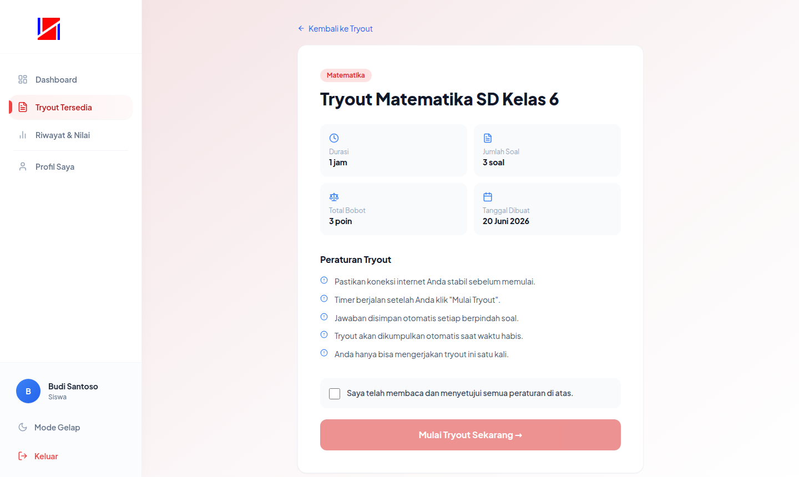
fitur-siswa-math.png
Ganti file ini dengan screenshot asisten
LaTeX di kolom esai
Menulis Manual Delimeter:
Anda juga dapat mengetik rumus secara manual di tengah esai dengan mengapit rumus
menggunakan simbol dolar (`$`).
Contoh pengetikan: Diketahui rumus pythagoras adalah $a^2 + b^2 = c^2$ maka...
Siswa / Penilaian
Melihat Ulasan Nilai & Lembar
Pembahasan
Panduan membaca skor akhir tryout dan menganalisis kunci jawaban soal pasca ujian selesai.
Halaman Hasil Ujian
Setelah sesi dikumpulkan, Anda dialihkan langsung ke halaman laporan
`/siswa/hasil/[sesiId]`. Lembar ini memaparkan:
- Skor Angka & Klasifikasi Huruf: Menampilkan total nilai akhir
berkisar 0-100 beserta grade predikatnya (A, B, C, atau D).
- Diagram Statistik Jawaban: Grafik lingkar rasio detail total jawaban
benar, jawaban salah, dan soal yang terlewat (skipped).
- Pembahasan Soal Detail: Daftar seluruh soal yang diujikan lengkap
dengan indikator kontras warna.
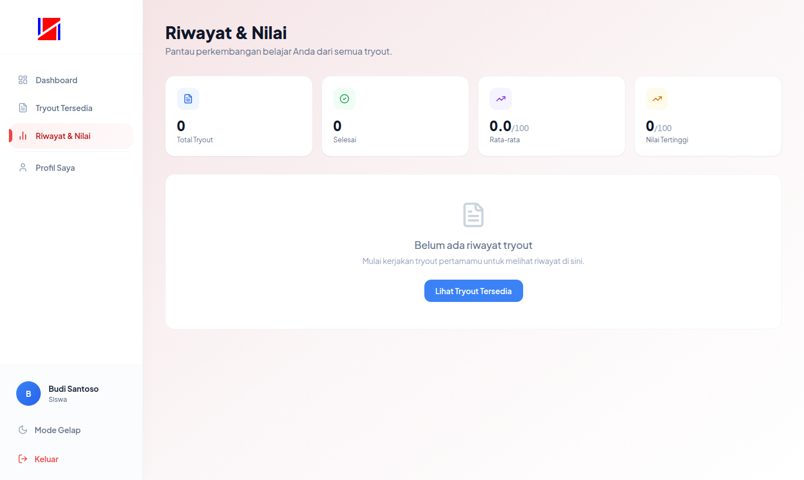
fitur-siswa-results.png
Ganti file ini dengan screenshot halaman
review nilai & pembahasan kunci
Guru / Dasbor
Dasbor Utama & Nilai Peserta
Panduan mengelola draf tryout yang sudah dibuat dan memantau perolehan nilai siswa secara
kolektif.
Menyaring Tryout di Dasbor
Daftar tryout milik Guru dapat dikelompokkan berdasarkan status pengerjaan menggunakan tab
penyaring di atas tabel:
Draft (Soal disunting)
Menunggu
Persetujuan
Aktif
(Published)
Selesai
(Closed)
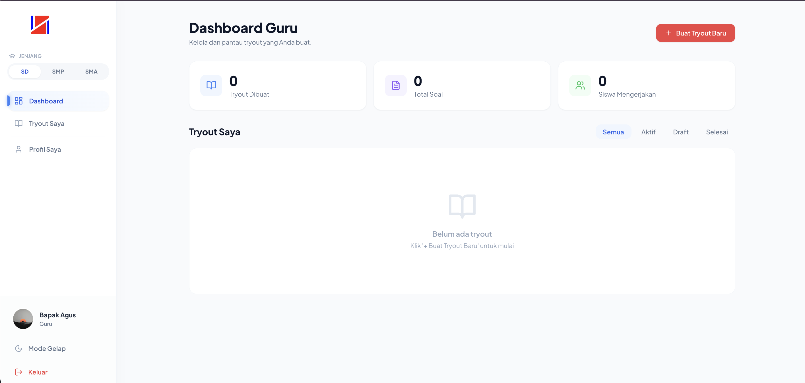
fitur-guru-dashboard.png
Ganti file ini dengan screenshot dasbor guru
dan panel rekap nilai
Guru / Wadah Tryout
Membuat Wadah Tryout Baru
Panduan menginisiasi kartu lembar ujian tryout dan mengikat kelas serta parameter durasi
waktu.
Formulir Pembuatan Ujian
Klik tombol biru **Buat Tryout Baru** pada dasbor Guru. Isilah kolom formulir dengan data
Judul, Mapel, Kelas, dan Durasi Ujian.
Perilaku Tombol Batal (TRN-05):
Mengeklik tombol Batal atau Kembali pada form pembuatan tryout ini akan
langsung mengarahkan Anda ke Dashboard Utama tanpa memicu modal konfirmasi. Pastikan
Anda tidak mengekliknya secara tidak sengaja agar data input tidak hilang.
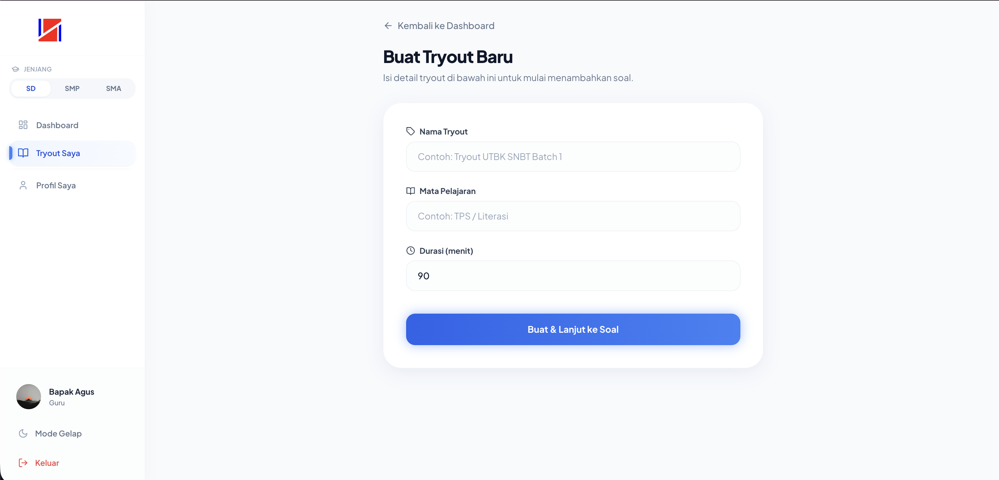
fitur-guru-create.png
Ganti file ini dengan screenshot form dialog
buat tryout baru
Guru / Editor Soal
Penyusunan Lembar Soal Manual
(LaTeX)
Panduan menyusun lembar soal, menyisipkan gambar base64, menyematkan rumus matematika, dan
menetapkan kunci jawaban.
Mengunggah Soal & LaTeX
Klik **Kelola Soal** pada tryout Anda, lalu klik **Tambah Soal Manual**. Anda dapat
memasukkan bobot soal, menulis pertanyaan menggunakan Rich Text Editor, menyisipkan gambar
base64 dengan drag-and-drop, dan menyematkan rumus matematika LaTeX via dialog **∑**.
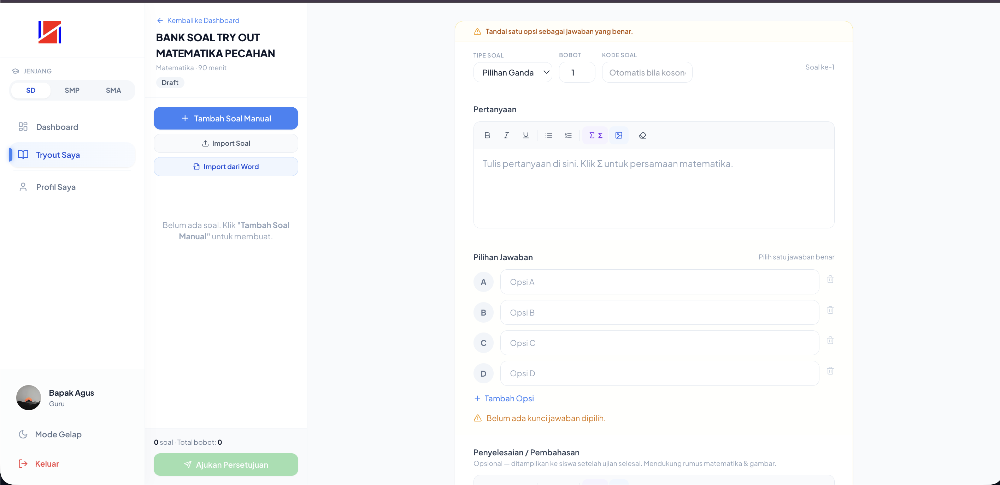
fitur-guru-soal.png
Ganti file ini dengan screenshot workspace
editor soal dan opsi kunci jawaban
Guru / Impor Massal
Unggah Massal via Microsoft Word
(.docx)
Aturan tata cara penulisan draf lembar soal pada berkas Word (.docx) dan Teks (.txt) agar
dapat terbaca sempurna oleh parser sistem Triton.
Format Penulisan Microsoft
Word (.docx)
Unduh berkas template `.docx` yang disiapkan pada modal impor. Setiap butir soal dalam file
Word wajib mengikuti aturan sintaks pemisah `[SOAL]`, `Tipe:`, `Bobot:`, `Pertanyaan:`, dan
penanda kunci jawaban benar berupa simbol bintang (`*`).
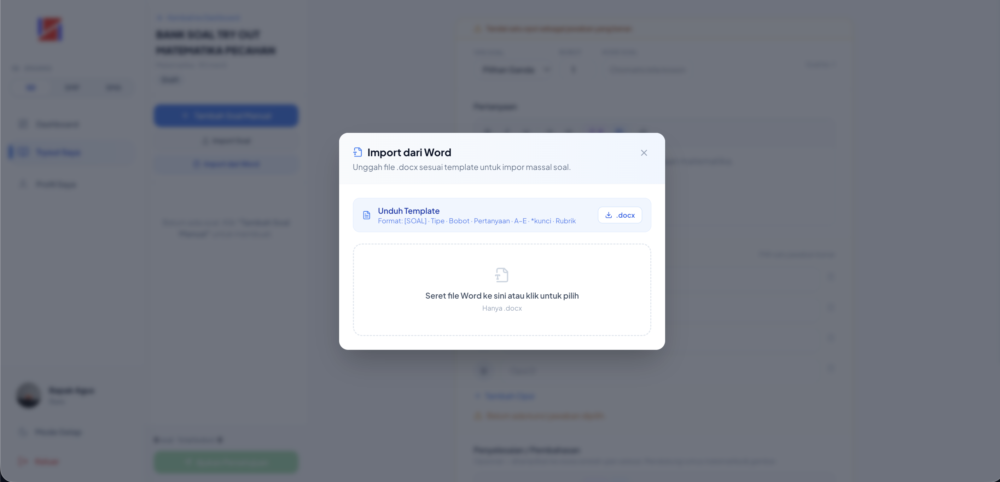
fitur-guru-import-word.png
Ganti file ini dengan screenshot modal impor
berkas Word dan hasil preview soal
Guru / Validasi
Ujian
Pengajuan Persetujuan & Siklus
Revisi
Prosedur pengajuan verifikasi draf tryout ke pihak Admin dan cara membaca instruksi
perbaikan jika ditolak.
Mengajukan Ujian & Revisi
Apabila tryout telah diisi soal, ajukan persetujuan ke Admin. Apabila Admin mengembalikan
status ke **Butuh Revisi** (Rejected), guru dapat membaca catatan di samping workspace soal
dan mengajukan ulang setelah perbaikan.
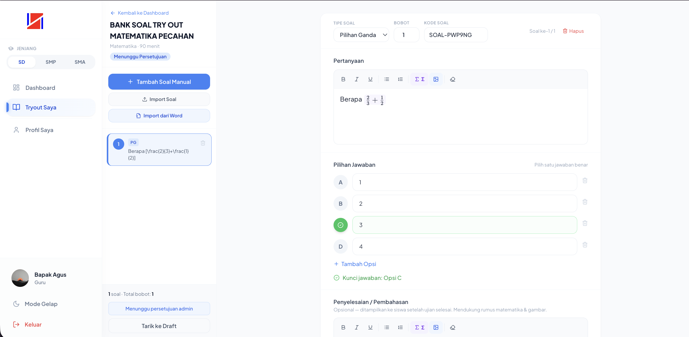
fitur-guru-revisi.png
Ganti file ini dengan screenshot panel
catatan revisi admin pada halaman soal guru
Admin / Beranda
Dasbor Statistik & Penyaringan
Jenjang
Panduan bagi Admin untuk membaca kartu-kartu metrik statistik global dan melakukan
penyaringan data.
Saringan Filter Jenjang
Dasbor admin menampilkan data pengguna dan tryout yang disaring secara real-time berdasarkan
jenjang sekolah (SD/SMP/SMA). Data Guru dikecualikan dari saringan (tetap tampil global).
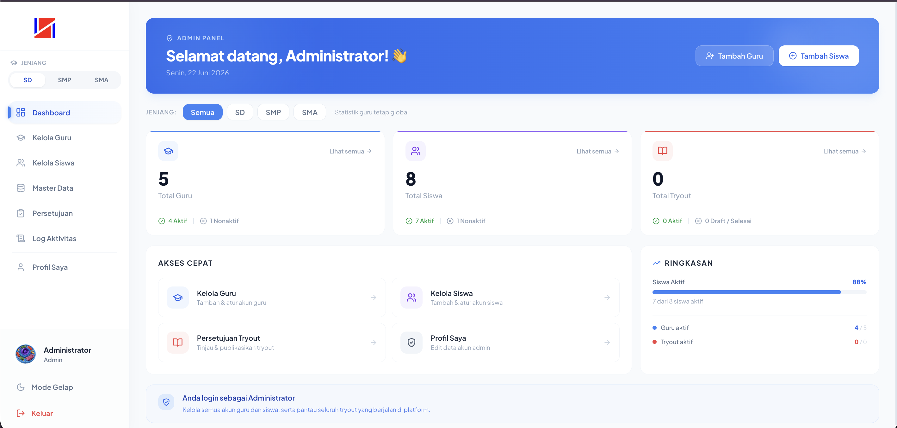
fitur-admin-dashboard.png
Ganti file ini dengan screenshot halaman
dashboard utama Admin
Admin / Pengguna
Manajemen Akun Guru & Siswa
Panduan mengontrol akun pengguna, menambahkan user baru, dan menangguhkan hak akses login.
Registrasi Pengguna & Suspend
Admin mengelola CRUD Guru dan Siswa pada tab terpisah. Menonaktifkan sakelar status aktif
user akan memotong sesi login mereka saat itu juga.
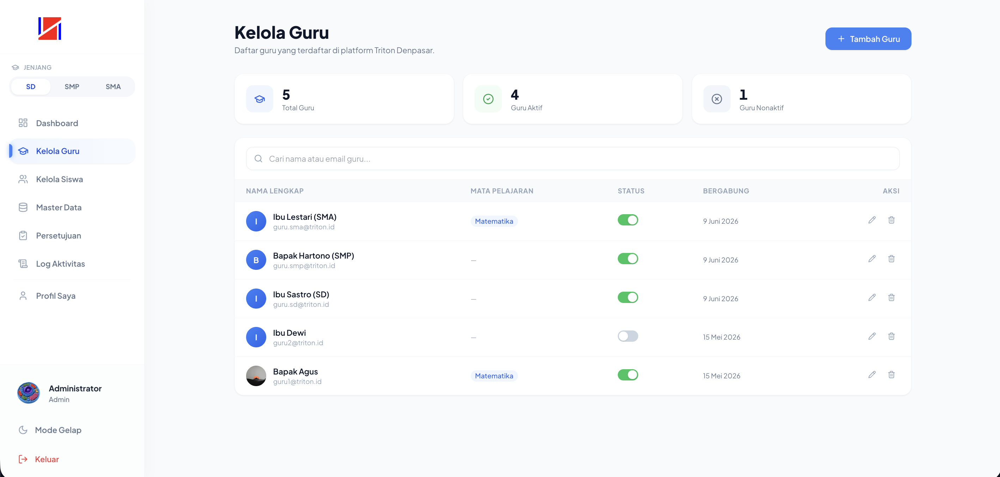
fitur-admin-users.png
Ganti file ini dengan screenshot halaman
registrasi & kelola user admin
Admin / Master Data
Manajemen Data Master Pendukung
Pengelolaan kelas, mata pelajaran, dan sub-mapel induk sebagai syarat wajib pembuatan materi
Guru.
Daftar Kolom Master
Tambahkan data master secara berurutan: Kelas & Mapel Induk, kemudian Sub-Mapel.
Mencegah error duplikasi data nama master pada satu jenjang yang sama.
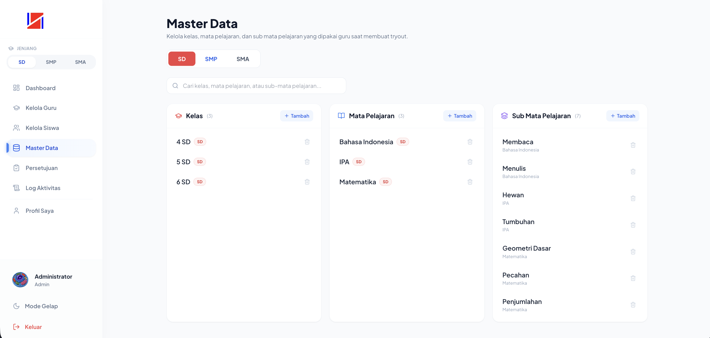
fitur-admin-master.png
Ganti file ini dengan screenshot panel kelola
master data kelas dan mata pelajaran
Admin / Validasi
Sistem Persetujuan Tryout
(Approval)
Panduan mengontrol kualitas soal ujian sebelum dirilis ke aplikasi siswa.
Menolak & Menyetujui
Admin memeriksa draf butir soal guru. Klik **Setujui** atau **Publikasikan** untuk
mengaktifkan tryout. Klik **Tolak / Revisi** dan isi modal catatan perbaikan untuk
mengembalikannya ke draf guru.
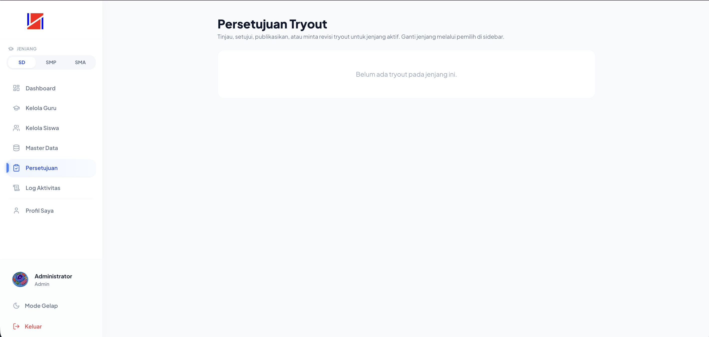
fitur-admin-approval.png
Ganti file ini dengan screenshot halaman
persetujuan tryout admin
Admin / Audit
Pemantauan Log Aktivitas (Audit
Log)
Laporan jejak rekam digital seluruh aktivitas pengguna pada platform tryout Triton.
Membaca Log Audit
Halaman `/admin/logs` menampilkan riwayat login, CRUD data, persetujuan tryout, dan
pelanggaran proktor CBT. Hover kursor pada ikon informasi untuk melihat alamat IP dan
User-Agent browser aktor.
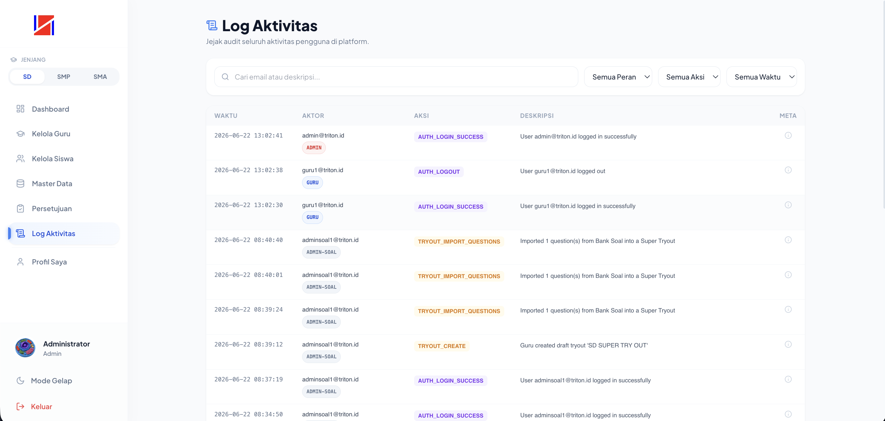
fitur-admin-logs.png
Ganti file ini dengan screenshot halaman
audit log platform
Admin Soal / Dasbor
Dasbor Admin Soal &
Persetujuan Ujian
Panduan bagi Admin Soal untuk meninjau status persetujuan draf ujian guru, memberikan umpan
balik revisi, dan mengelola bank soal.
Metrik Dasbor
Utama
Menampilkan ringkasan jumlah Total Super
Try Out yang telah dibuat serta jumlah Tryout Guru Menunggu
Persetujuan secara aktual dari seluruh jenjang (SD, SMP, SMA).
Daftar Pengajuan
Guru
Menampilkan kartu-kartu tryout yang diajukan oleh
guru dengan status pending_approval. Kartu menyertakan detail nama guru
pembuat, jenjang, mata pelajaran, dan jumlah soal.
Alur Persetujuan &
Revisi Tryout
Setiap tryout yang disusun oleh guru tidak akan langsung terbit ke siswa sebelum divalidasi
oleh Admin Soal. Berikut alur kerjanya:
1
Menyetujui & Publikasi
Klik tombol hijau Setujui & Publikasi pada kartu tryout yang
bersangkutan. Status tryout akan otomatis berubah menjadi published
(Aktif) dan siswa di jenjang/kelas terkait dapat langsung melihat dan mengerjakan
ujian tersebut.
2
Menolak / Mengembalikan untuk Revisi
Apabila soal dirasa kurang sesuai atau ada kesalahan penulisan, klik tombol
Tolak / Revisi. Kolom catatan revisi akan terbuka otomatis.
Masukkan alasan penolakan secara rinci (contoh: "Soal nomor 3 rumus LaTeX tidak
merender, harap perbaiki delimeter").
3
Kirim Catatan ke Guru
Klik Kirim Revisi. Status tryout berubah menjadi
rejected (Revisi) dan guru pembuat akan menerima notifikasi beserta
catatan revisi Anda di halaman edit soal mereka.
Admin Soal / Super
Try Out
Penyusunan & Manajemen Super
Try Out
Panduan menyusun kompilasi soal ujian tingkat tinggi (Super Try Out) lintas jenjang dan guru
di platform Triton.
Apa itu Super Try Out?
Super Try Out adalah paket ujian khusus yang dibuat langsung oleh Admin
Soal. Fitur ini memungkinkan pembuatan lembar ujian kompilasi berbobot tinggi untuk
persiapan UTBK, ujian nasional, atau simulasi akbar.
Keistimewaan Super Try Out:
- Dapat disusun menggunakan bank soal kompilasi dari berbagai guru.
- Mendukung setelan pengacakan soal (
randomize_questions) dan opsi
jawaban (randomize_options) untuk meminimalkan kecurangan siswa.
- Diberi label badge khusus
Super Try Out di halaman dasbor siswa.
Langkah Membuat Super Try Out
1
Klik "Buat Super Try Out"
Pada dasbor kanan atas, klik tombol Buat Super Try Out. Sebuah
jendela modal form akan muncul.
2
Pilih Jenjang, Kelas, dan Mapel
Tentukan jenjang sekolah (SD, SMP, atau SMA). Sistem akan otomatis memperbarui
daftar pilihan kelas dan mata pelajaran yang tersedia sesuai jenjang tersebut
(mengambil dari tabel data master).
3
Isi Detail Judul & Durasi
Masukkan judul Super Try Out (contoh:
Tryout Akbar UTBK 2026 Gelombang I) beserta batas waktu pengerjaan
dalam satuan menit. Klik Buat & Kelola Soal.
4
Isi Bank Soal & Hapus
Anda akan dialihkan ke editor bank soal khusus Super Try Out. Anda dapat menambahkan
soal pilihan ganda maupun esai secara manual lengkap dengan LaTeX. Jika ujian sudah
selesai digunakan, Anda dapat menghapusnya secara permanen dengan mengeklik ikon
tempat sampah pada dasbor.
Triton CBT / FAQ
FAQ & Troubleshooting
Pertanyaan yang sering diajukan dan solusi pemecahan masalah teknis mandiri bagi pengguna.
**Jawab**: Layar merah menandakan Anda keluar dari mode Layar Penuh (Fullscreen) selama
ujian, yang melanggar aturan proktor. Segera klik tombol **Kembali ke Layar Penuh** di
tengah layar untuk membuka blokir dan melanjutkan ujian Anda.
**Jawab**: Hal ini terjadi karena tingkat jenjang pendidikan siswa di profilnya tidak
cocok dengan tingkat jenjang tryout yang diakses. Firewall Triton API Gateway memblokir
akses lintas jenjang demi keamanan data. Hubungi Admin untuk mengoreksi jenjang
pendidikan pada profil siswa bersangkutan.
**Jawab**: Pastikan setiap butir soal diawali penanda [SOAL], baris tipe diisi tepat
Tipe: pilihan_ganda, dan
**kunci jawaban** ditandai dengan bintang (*) menempel langsung di depan
huruf opsi (contoh: *A. Pilihan A). Hindari adanya
spasi di antara bintang dan huruf opsi.